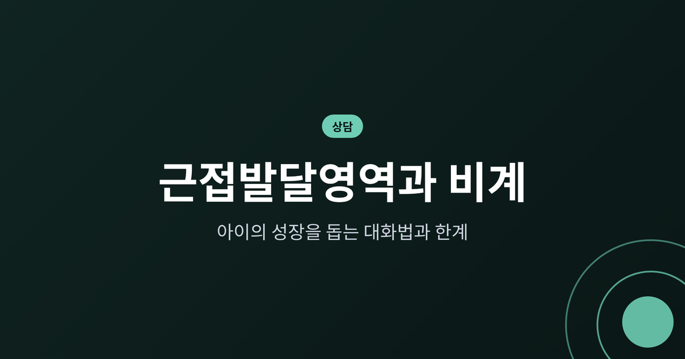
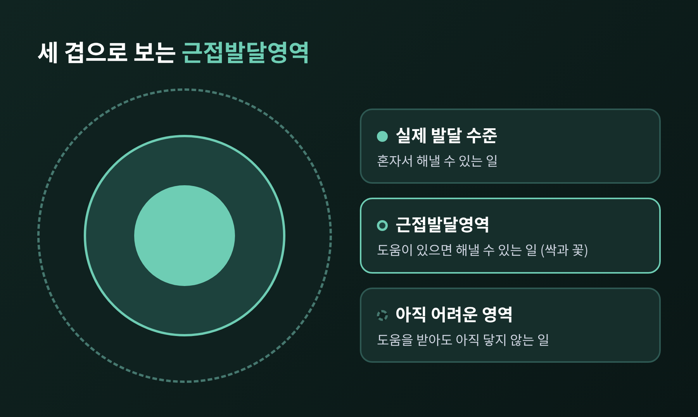
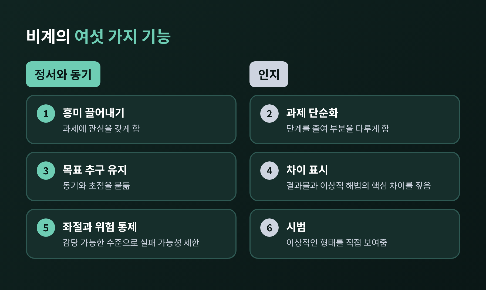
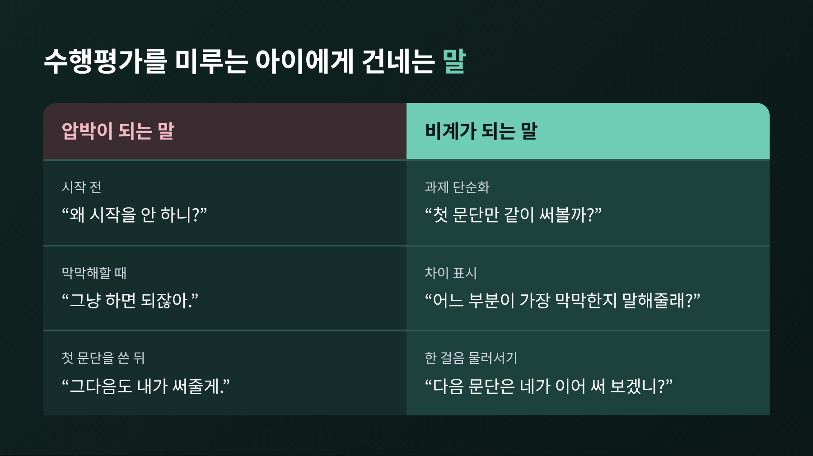
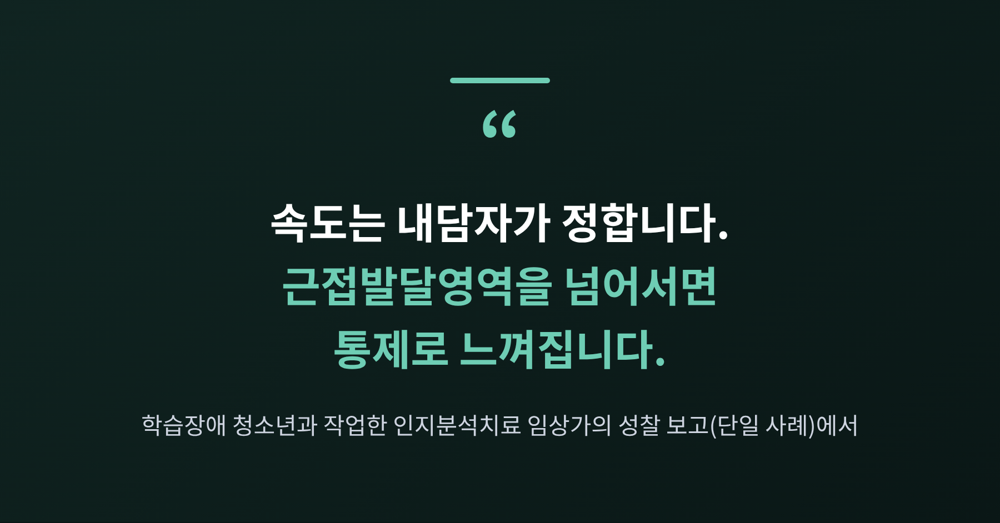
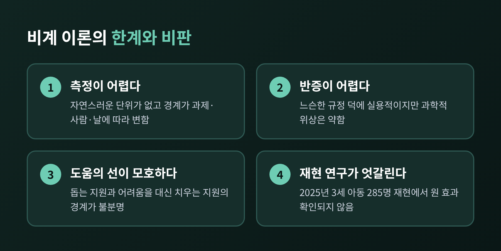

오늘은 비고츠키의 근접발달영역(ZPD)과 비계(scaffolding)를 상담과 양육의 언어로 풀어보려 합니다.
핵심은 이렇습니다. 아이가 혼자 할 수 있는 일과 도움을 받아야 할 수 있는 일 사이에 성장이 일어나고, 어른의 도움은 그 사이에서 필요한 만큼만, 그리고 점차 줄어들어야 합니다.
다만 비계 이론에는 알아두어야 할 한계와 비판도 있어 함께 정리했습니다.
비고츠키는 1978년 영어로 출간된 『Mind in Society』에서 근접발달영역을 하나의 거리로 정의했습니다.
독립적으로 문제를 풀 때 드러나는 실제 발달 수준과, 성인의 안내나 더 유능한 또래와의 협력으로 풀 때 드러나는 잠재적 발달 수준 사이의 거리입니다.
이 정의는 아이를 보는 시선을 바꿉니다.
지금 혼자 해내는 것만 재면 아이의 과거를 보게 됩니다. 도움을 받아 해내는 것까지 보아야 아이의 앞날이 보입니다.
비고츠키 자신도 이 영역의 기능을 아직 성숙 중인 '싹'이나 '꽃'에 비유했고, 이미 맺힌 '열매'와 구분했습니다.
대표적인 예가 있습니다. 혼자 풀면 둘 다 7세 수준인 여덟 살 아이 둘이 있다고 하겠습니다.
교사가 도와주었더니 한 아이는 9세 수준까지, 다른 아이는 7세 반 수준까지 올라갔습니다.
점수는 같아도 열려 있는 영역의 폭은 달랐던 것입니다. 상담 장면에서도 마찬가지입니다. 같은 어려움을 말하는 두 청소년이라도, 도움을 받아 나아갈 수 있는 폭은 서로 다릅니다.

의외로 들리실 수 있습니다. '비계'라는 용어는 비고츠키가 쓴 말이 아닙니다.
1976년 우드, 브루너, 로스가 어린 아이들의 튜터링 연구에서 처음 도입한 개념입니다. 이 연구에서 아이들은 혼자서는 어려운 3차원 구조물 조립 과제를 튜터의 도움으로 해냈습니다.
이후 연구자들이 이 비계를 근접발달영역과 연결해 오늘의 형태로 널리 쓰이게 되었습니다. 원 논문이 비고츠키를 인용하지 않았다는 점은 짚어둘 만합니다.
튜터가 한 일은 흔히 여섯 가지로 정리됩니다.
여기서 눈여겨볼 대목이 있습니다. 여섯 가지 중 절반은 정서와 동기에 관한 것입니다.
비계는 요령 있는 힌트 주기가 아니라, 아이의 마음이 과제 앞에서 버틸 수 있게 돕는 일을 포함합니다. 현장에서는 인지적 지원 위주로 쓰이는 경향이 있다는 지적도 있습니다.

비계의 핵심은 '점차 거두는 일시적 지원'입니다. 한 자료는 이렇게 표현합니다. 계속 남아 있는 비계는 비계가 아니라 의존이라고요.
실제 대화에서는 다음 순서로 옮겨볼 수 있습니다.
가상의 일반화된 사례로 설명해 보겠습니다. 중학생 자녀가 수행평가 준비를 미루고 있다고 하겠습니다.
"왜 시작을 안 하니?"라는 말은 비계가 되기 어렵습니다. 아이의 영역 바깥에서 던지는 압박일 수 있기 때문입니다.
"첫 문단만 같이 써볼까?"는 과제를 단순화하는 비계입니다. 아이가 첫 문단을 쓰고 나면 "다음 문단은 네가 이어 써 보겠니?"로 한 걸음 물러섭니다.
막막하다는 말이 나오면 "어느 부분이 가장 막막한지 말해줄래?"처럼 차이를 짚는 질문이 도움이 됩니다.
이런 도움은 자전거 안장을 잡아주는 일에 가깝습니다. 아이가 페달은 밟지만 아직 타지 못할 때 안장을 잡아주고, 균형이 잡히면 손을 놓습니다.
반대로 알파벳을 모르는 아이에게 책 읽기를 시키면 실패하기 쉽고, 이미 익힌 것에 계속 도움을 얹으면 호기심과 학습을 막을 수 있습니다.

심리상담에서도 비계는 쓰입니다. 새로운 대처 전략 만들기, 어려운 상황 다루기, 사회성 연습, 문제 해결, 정서 조절을 돕는 데 활용된다는 설명이 있습니다.
내러티브 치료를 다룬 한 순차 분석 연구는 이를 구체적으로 살폈습니다.
아이와 청소년은 치료자의 비계에 자신의 개념 형성 수준과 맞는 수준에서 반응하는 경향이 있었습니다. 한 회기 동안 아이와 치료자 모두 초기 단계에서 후기 단계로 옮겨가는 경향도 보였습니다.
해결중심치료에서는 '해결중심 근접발달영역'이라는 개념을 제안한 이론 논문도 나왔습니다. 다만 이는 이론적 제안이며 효과를 검증한 것은 아닙니다.
단일 사례이기는 하지만 인상적인 보고가 하나 있습니다. 학습장애가 있는 청소년 내담자와 작업한 인지분석치료 임상가의 성찰입니다.
치료자는 내담자의 이해 수준에 맞춰 어휘를 조정했습니다. 한 페이지에 한 개념만 담은 소책자를 만들었고, 그림을 함께 오려 붙이며 속도를 내담자가 정하게 했습니다. 내담자는 언제든 "잠깐 멈춰"라고 말할 수 있었습니다.
이 글에는 중요한 경고도 담겨 있습니다. 근접발달영역을 넘어서면 내담자는 통제당한다고 느끼고 물러서거나 과제를 하지 않을 수 있다는 것입니다. 치료자 스스로 통제로 기우는 자신을 경계해야 했다고 적었습니다.
가족 상담으로 옮겨 생각해 보겠습니다. 부모가 청소년 자녀에게 쓰는 비계는, 아이가 보기에는 간섭과 구분하기 어렵습니다.
그래서 비계의 척도는 부모의 선의가 아니라 아이가 느끼는 속도감입니다. "지금 도움이 되니, 아니면 부담이 되니?"라고 묻는 일 자체가 비계를 조율하는 방법입니다.

비계는 매력적인 개념이지만 한계가 분명합니다.
첫째, 측정이 어렵습니다. 근접발달영역에는 자연스러운 단위가 없고, 경계는 과제와 도와주는 사람, 그날의 상태에 따라 달라집니다. 결국 판단에 크게 의존합니다.
둘째, 반증하기 어렵습니다. 이론이 느슨하게 규정된 덕에 실용성은 높지만, 과학적 위상은 약해집니다.
셋째, 효과적인 도움의 선이 모호합니다. 학습을 가능하게 하는 지원과 어려움을 대신 치워버리는 지원의 경계를 비고츠키는 거의 말하지 않았습니다.
넷째, 과제를 지나치게 매끄럽게 만들면 수업 중 수행은 좋아져도 나중의 기억 유지는 약해질 수 있습니다. 지나치게 엄격한 비계가 표면적 학습으로 이어질 수 있다는 비판적 분석도 있습니다.
가장 눈에 띄는 것은 재현 연구입니다.
1978년 우드 등은 '실패하면 도움을 늘리고, 성공하면 줄이는' 원칙의 효과를 32명 규모 실험에서 매우 크게 보고했습니다.
2025년 스미트 등이 『Journal of Educational Psychology』에 낸 사전등록 직접 재현은 3세 아동 285명을 대상으로 했습니다. 튜터 정확도는 68.9%로 원 연구의 70%와 비슷했습니다. 그러나 이 원칙이 이후 아이의 독립 수행을 높인다는 결과는 재현되지 않았습니다.
균형을 위해 덧붙이겠습니다. 이 재현은 3세 아동과 특정 조립 과제에 한정됩니다. 연구자들은 어린 아이의 짧은 주의 지속이 영향을 주었을 가능성도 언급했습니다.
따라서 청소년 상담에 그대로 옮길 수 있는지는 확인되지 않았습니다. 상담 장면의 적용 근거 역시 순차 분석, 이론 논문, 단일 사례 보고 수준이어서 효과를 단정하기 어렵습니다.
비판자들 가운데에는 비계를 기계적인 규칙이 아니라 루틴과 환경, 관계를 설계하는 일, '따라가며 이끄는 일'로 다시 이해하자고 제안하는 이들도 있습니다.

현장에서는 과잉 비계와 과소 비계의 신호를 구분해 보라고 권합니다. (교육 현장 정리에 근거한 2차 자료이므로 참고용입니다.)
시작하기 전에 지시를 기다리거나, 시도해 보기 전에 도움부터 청하거나, 배운 것을 새 상황으로 옮기지 못한다면 과잉일 수 있습니다.
반대로 좌절과 회피가 늘고 "난 못 해"라는 말이 나온다면 과소일 수 있습니다.
해법은 의외로 단순합니다. 개입하기 전에 생각할 시간을 주고, 답 대신 작은 단서와 질문을 건넵니다.
그리고 도움을 받은 뒤 아이가 어떻게 달라졌는지를 다시 살핍니다.
정리하면 이렇습니다.
예전에는 도움이 많을수록 좋은 양육이라 여기기 쉬웠습니다. 지금은 도움이 얼마나 빨리 사라지는지가 더 중요한 질문이 되었습니다.
"도움은 필요한 만큼만, 그리고 곧 거두기 위해 건넨다."
비계가 아이를 키우는 것인지, 아이가 비계 위에서 스스로 올라서는 것인지는 끝내 아이의 표정이 알려줍니다. 그 표정을 읽으려 애쓰는 어른이라면, 이론의 한계가 있더라도 이미 좋은 비계를 세우고 계신 셈입니다.
이 글은 일반적인 정보 제공을 위한 것이며 개인의 진단이나 치료를 대신하지 않습니다. 자녀의 학습·정서·행동 문제로 어려움이 크거나 지속된다면, 혼자 해결하려 하지 마시고 심리상담 전문가나 청소년상담복지센터 등 전문 기관의 도움을 받으시길 권합니다.